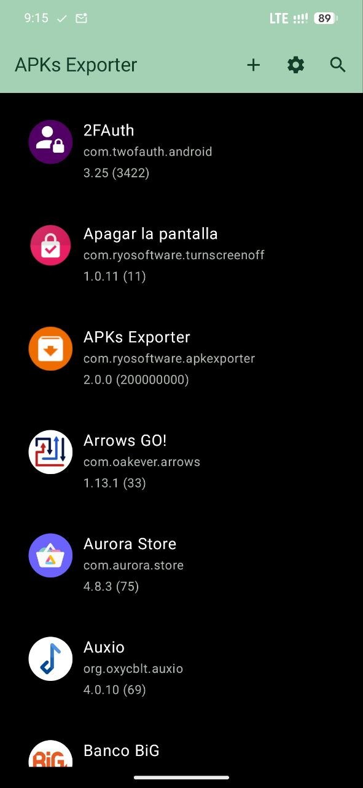
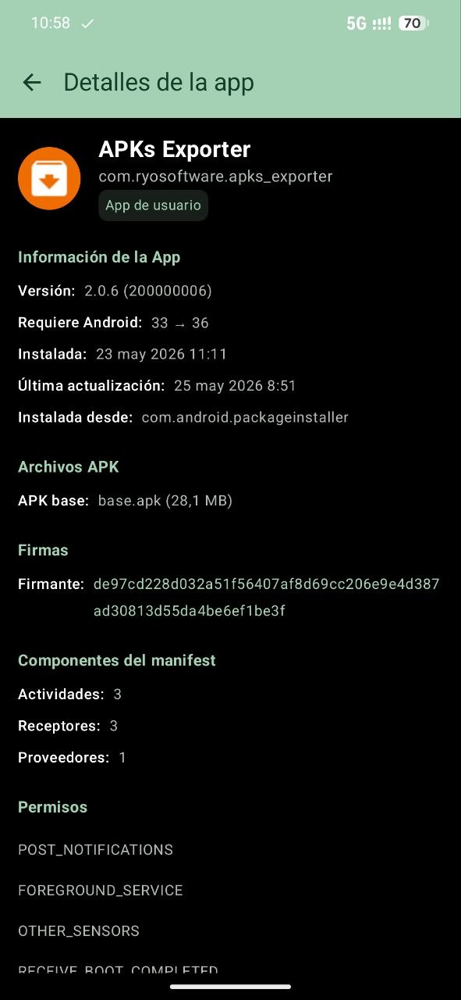
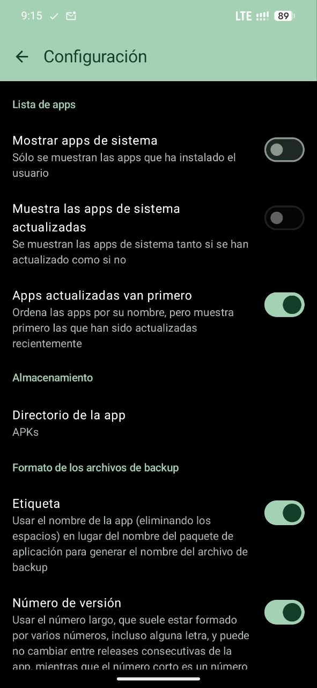

WSAFile
应用一经更新，旧版便无处可寻。WSAFile 将已装应用连同分片一并导出为 APK，归于自选的目录。



功能
导出应用
基础 APK 与全部分片按原样取出，不重新打包，签名与清单保持原状。
打包保存
多分片的记录可存为单个 .zip 或 .apkm；只含一个文件时不压缩。
自动备份
应用新装或更新后自动保存，后台定时检查，可按应用单独开关。
批量选择
列表内多选，一次写入多个应用的备份。
应用详情
版本、安装与更新时间、存储占用、所需 Android 版本。
权限与签名
列出应用申请的全部权限，包含无障碍、悬浮窗、通知读取等特殊权限，并显示签名信息。
清单组件
Activity、Service、Receiver、Provider 分类列出。
文件管理
顶栏直达系统文件管理，可直接查看导出的文件。
使用
-
01
指定目录
在设置中选择保存目录，决定文件名用应用名还是包名，是否带上版本号。
-
02
选择应用
列表按名称或更新时间排序，可只看用户应用；点进详情，或多选后一并处理。
-
03
保存文件
导出基础包与分片，按设定的格式写入目录；需要时可直接安装导出的 APK。
安装
-
01
下载
从 Releases 下载
WSAFile.apk。 -
02
允许安装
首次安装时，为文件管理或浏览器开启「安装未知应用」。
-
03
授权
首次启动时授予「管理所有文件」权限，用于写入所选目录。